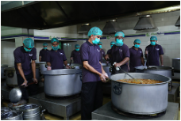
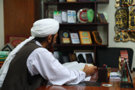
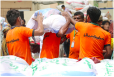
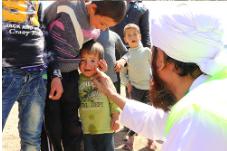
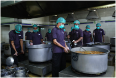
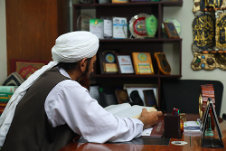
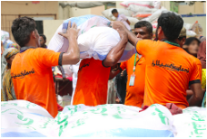
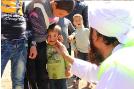

Millions of people's life has changed, millins more awaitting your donations.
- Home
- About
- Introdction
- Chairman Message
- Saylani Annual Report
- saylani Services
- Education
- Saylani Mass Training
- Saylani Incubator
- Green House
- Medical
- Saylani Blood Bank
- Saylani Clinic/Hospital
- Medical Internship Form
- Welfare
- Family Adobtion
- Weeding Help
- Hajj Application Form
- Saylani Dastarkhwan
- Saylani Ro Plant
- Online Sadqah
- Oline Taweezad/Istikhara
- Saylani Job Bank
- Saylani Quran Academy
- Online Quran Admission
- Quran App(Taftesh)
- Online Quran Registration
- Books
- Saylani Online Masajid
- Education
- Future Project
- Saylani Univercity
- Saylani City
- Media
- News
- Donation
- Bank Detail
- Sadqa
- Aqiqa
- Other Donation
- Corona Effecties
- Contact Us
Established in May 1999 by famous spiritual and religious scholar Maulana Bashir Ahmed Farooqui, Saylani
Welfare International Trust was built
on the fundamentals of breaking the cycle of poverty,
alleviating the financial troubles of the poor, giving people a chance to live a dignified life
and
spreading happiness.
We are an organization that believes in lighting up the lives of underprivileged people across the
world. We endeavor to provide the best quality
services in areas including food, education, medical
and social welfare free of cost to people living in the dark. With over 60 different sectors, we
feed thousands of hungry people each day, hundreds more are given the hope of life through medical
health care, many are educated to
become leaders of tomorrow and several are given the opportunity
to stand on their feet financially.
Today, we are proud to say that our physical presence extends throughout Pakistan with a vast network of
125 branches operating in major
cities including Karachi, Lahore, Islamabad, Rawalpindi, Hyderabad
and Faisalabad. Apart from Pakistan, we have overseas offices in the UK, USA
and UAE as well. Our
worldwide branches are operating under the guidance of a team of over 2,000 working professionals who
help almost
125,000 people on a daily basis.
We strongly believe that a little help goes a long way and our work would not be possible without the
generous support of our valuable donors.
Our local and international donors have graciously lent us
a hand by supporting our causes and enabling us to serve the needs of people in
need.
125,000
DAILY DASTARKHWAN (MONTHLY)
75,000
FAMILY ADOBTION (MONTHLY)
43,749
MEDICAL(MONTHLY)
180,000
EDUCATION(MONTHLY)
ONLINE SADQAH
WELFARE
MEDICAL
DASTARKHWAN
RO PLANT
EDUCATION
MISSION AND UPCOMING PROJECTS
HEPATITIS
HOUSING SOCIETY
IT LITERACY
THARPARKAR
UPCOMINNG EVENTS

 







- Head Office,
- A-25 Bahadurabad Chorangi Karachi,
- Pakistan
- UAN: 111-729-526
- (+0092-213)4130786-90
- CELL: 92-311-1729526
- USA NO+1(716)9417792
- UK NO(+44)1159706256
- info@saylaniwelfare.com
Usefull Links
Contact with us
copyright @ 2020 saylani welfare